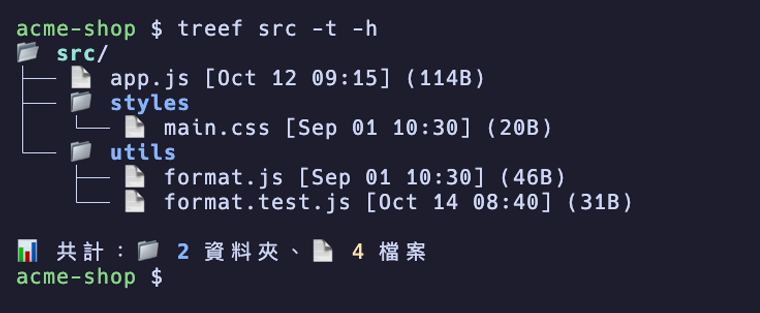
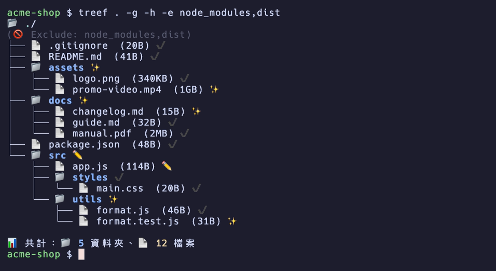
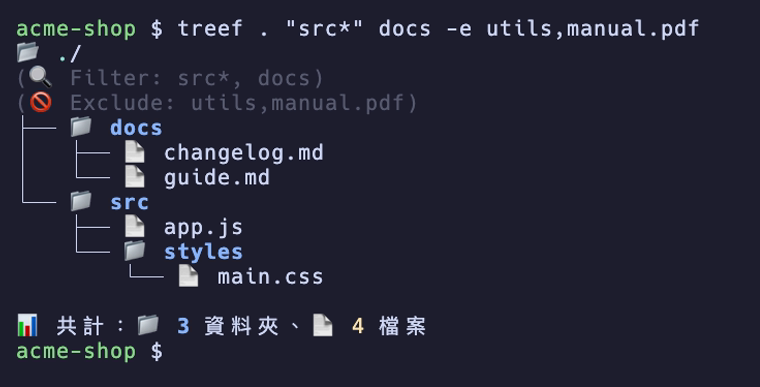
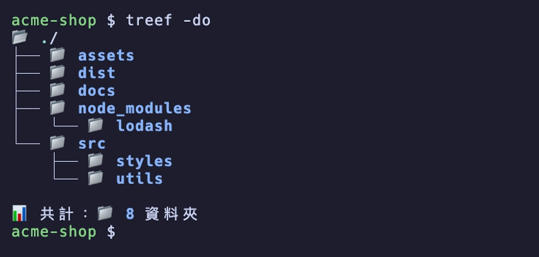
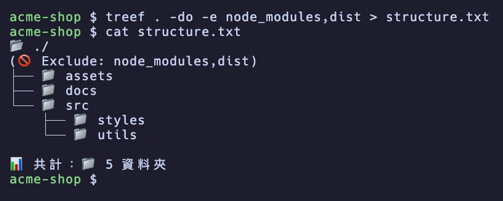

01 · 時間與大小修改時間、建立時間、檔案大小
-t 顯示最後修改時間，-ct 顯示建立時間，-h 顯示檔案大小。大小自動換算成 B／KB／MB／GB。
- 大小取整數：2.4MB 的檔案顯示為
2MB - 預設模式下，時間與大小只顯示在檔案後面，目錄後面只顯示 Git 狀態（
-s精簡模式的目錄後面也會顯示時間） - macOS 用 BSD
stat，完整支援建立時間；Linux 用 GNUstat，建立時間依檔案系統支援

CLI 工具 · macOS · Linux · Bash
帶 emoji、顏色、檔案大小與 Git 狀態的目錄樹。
一支 Bash 腳本，把資料夾畫成樹狀結構：目錄與檔案前面加上 📁／📄，目錄名稱以粗體藍色標示；加 -h 顯示檔案大小、-g 顯示 Git 狀態。v2.0 起改用 Bash 原生 globbing 走訪目錄，不再呼叫 find，用來避開大型專案（例如 node_modules）常見的「Too many open files」問題。
需求：macOS 或 Linux 上的 Bash；-g 需要 git

-e 排除了 node_modules 與 dist。// 功能
用法：treef [directory] [pattern...] [options]。不給目錄就是目前目錄。
-t 顯示最後修改時間，-ct 顯示建立時間，-h 顯示檔案大小。大小自動換算成 B／KB／MB／GB。
2MB-s 精簡模式的目錄後面也會顯示時間）stat，完整支援建立時間；Linux 用 GNU stat，建立時間依檔案系統支援
目錄之後的其他參數都當作包含條件，可用萬用字元（例如 "src*"，限制見下方「使用前請先知道」）；-e 接逗號分隔的名稱清單，排除指定的檔案或目錄。
-d <n> 限制遞迴深度treef . "src*"
-do 只列資料夾、隱藏所有檔案，最後的統計也只算資料夾數。
-e、-d、包含條件一起用.gitignore）平常會列出，.git 目錄一律不列
輸出不是終端機時（例如 > structure.txt），不加 ANSI 顏色代碼，存下來的文字檔可以直接貼進技術文件。
-s 精簡模式treef . "cheng*" -do -e target,node_modules,.npm-cache -d 15 > Architecture.txt
// 安裝
treef 是單一 Bash 腳本，裝好就能用。macOS 與 Linux 都能執行。curl 的寫法照 README 安裝到 /usr/local/bin；沒有寫入權限時要加 sudo，或改放到自己 PATH 裡的目錄。
# Homebrew（建議） brew tap mark22013333/treef brew install treef # 或用 curl 下載腳本 curl -L https://raw.githubusercontent.com/mark22013333/treef/main/treef.sh \ -o /usr/local/bin/treef chmod +x /usr/local/bin/treef
treef -help，列出全部參數與範例。treef . -g -h -e node_modules,dist，顯示 Git 狀態與大小，並排除 node_modules、dist。treef -do。-s 精簡模式（不加顏色與 📁／📄）-do 只顯示目錄-h 檔案大小、-g Git 狀態-t 修改時間、-ct 建立時間-d <n> 遞迴深度-e <list> 排除清單（逗號分隔，例如 -e bin,obj）-help 顯示說明// 使用前請先知道
-g 在目前的工作目錄執行 git status。不在 git repo 裡執行時查不到狀態，所有項目都會顯示 ✔️；請先 cd 進 repo 再跑。git add 的修改）顯示 ✖️。另外 ✔️ 其實代表「git status 沒有列出它」：被 .gitignore 忽略的檔案、或不在 repo 裡執行時，也都顯示 ✔️，不代表已進版控。-e）則每一層都比對。treef docs -e "*.md"，*.md 變成根目錄的 README.md，docs 裡的 .md 照樣列出）。在要看的目錄裡執行 treef . "src*" 可以正常過濾；從上層執行 treef 專案 "src*" 會什麼都列不出來。-e 同理，所以排除請直接寫名稱（例如 -e node_modules,dist）。-s 拿掉顏色與 📁／📄 圖示，但 -g 的 ✔️／✏️／✨ 符號照樣顯示。